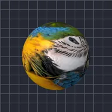

Elipsoide

Envolve a camada em uma esfera que você pode comprimir e achatar.
Configurações
| Configuração | Tipo | Intervalo | Padrão |
|---|---|---|---|
| Rotação X | Ângulo | -3600° a 3600° | -15° |
| Rotação Y | Ângulo | -3600° a 3600° | 0° |
| Rotação Z | Ângulo | -3600° a 3600° | 0° |
| Raio | Número | 0.02 a 5 | 0.8 |
| Compressão | Número | 10% a 190% | 100% |
| Achatamento | Número | 5% a 100% | 100% |
| Posição | Ponto (X, Y) | -5000 px a 5000 px | 0 px, 0 px |
| Escala | Número | 0.05 a 10 | 1 |
| Perspectiva | Número | 0 a 1 | 0.5 |
| Sombreamento | Número | 0 a 1 | 0.6 |
| Ângulo da luz | Ângulo | -3600° a 3600° | 135° |
| Brilho | Número | 0 a 1 | 0.3 |
| Iluminação | Opção | Clássica, Suave, Direta | Clássica |
| Ambiente | Número | 0 a 2 | 0.03 |
| Altura da luz | Número | 0 a 20 | 3 |
| Cor da luz | Cor | – | #FFFFFF |
| Nitidez do brilho | Número | 1 a 200 | 15 |
| Textura | Opção | Ajustar, Mosaico, Esticar | Ajustar |
| Repetir X | Número | 0.01 a 100 | 1 |
| Repetir Y | Número | 0.01 a 100 | 1 |
| Espelhar | Ativado ou desativado | – | Desativado |
| Ângulo da textura | Ângulo | -3600° a 3600° | 0° |
| Deslocamento da textura | Ponto (X, Y) | -100 a 100 | 0, 0 |
| Corte da textura | Número | 0.05 a 10 | 1 |
| Âncora da textura | Opção | Centro, Canto | Centro |
| Estilo | Opção | Clássico, Padrão | Clássico |
| Posição Z | Número | -100000 a 100000 | 600 |
| Direção | Ponto (X, Y) | -100000 a 100000 | 75, -75 |
| Elevação | Número | -100000 a 100000 | 100 |